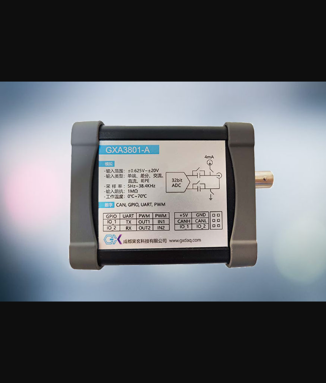

The GXA3801 is an ultra-high-precision analog acquisition module featuring a 32-bit ADC with a maximum sampling rate of 38.4 kHz. It supports single-ended, differential, AC, DC, and IEPE coupling modes, making it ideal for vibration acquisition, noise testing, and pressure measurement. With a 1 MΩ input impedance, the digital port can be configured for multiple functions including CAN, UART, PWM, and IO signals. Full SDK support is provided for secondary development.
| Parameter | Specification |
|---|---|
| Model | GXA3801 |
| Channel Configuration | Single-ended / Differential |
| ADC Resolution | 32-bit |
| Sampling Rate Range | 5 Hz – 38,400 Hz |
| Coupling Mode | Single-ended / Differential / AC / DC / IEPE |
| Input Range (DC) | 0 – 0.156 V to 0 – 40 V |
| Input Range (AC) | ±0.078 V to ±20 V |
| Input Range (Differential) | ±0.078 V to ±2.5 V |
| Input Impedance | 1 MΩ |
| Digital Port | CAN 2.0 / UART / PWM (I/O) / IO |
| Secondary Development | Supported — Full SDK (Windows / Linux) |
Custom coupling configuration, firmware, branding and packaging — backed by our in‑house R&D and manufacturing team.
Buy straight from the manufacturer. Competitive wholesale pricing with tiered discounts for distributors and bulk orders.
Worldwide delivery via DHL / FedEx / UPS with export‑grade packaging. Sample units ship within 3–5 business days.
Free SDK, full documentation and remote engineering support for the entire product lifecycle — 12‑month warranty included.